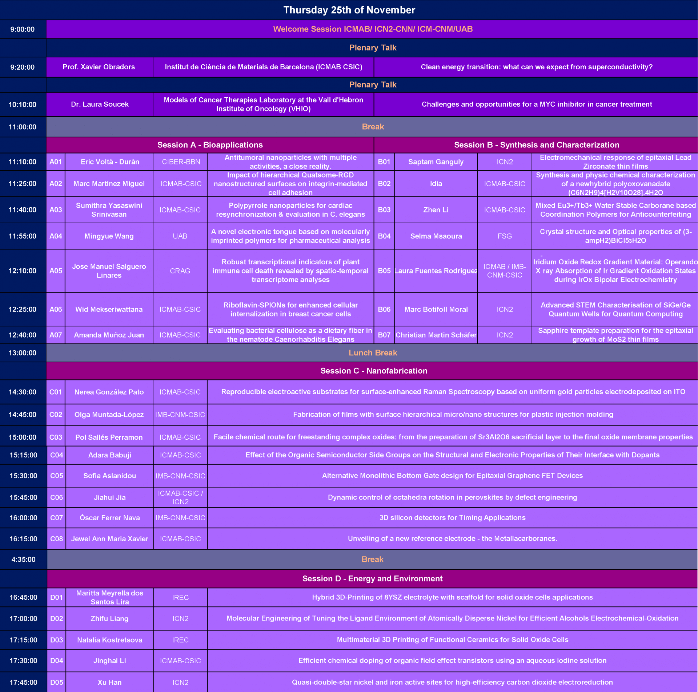
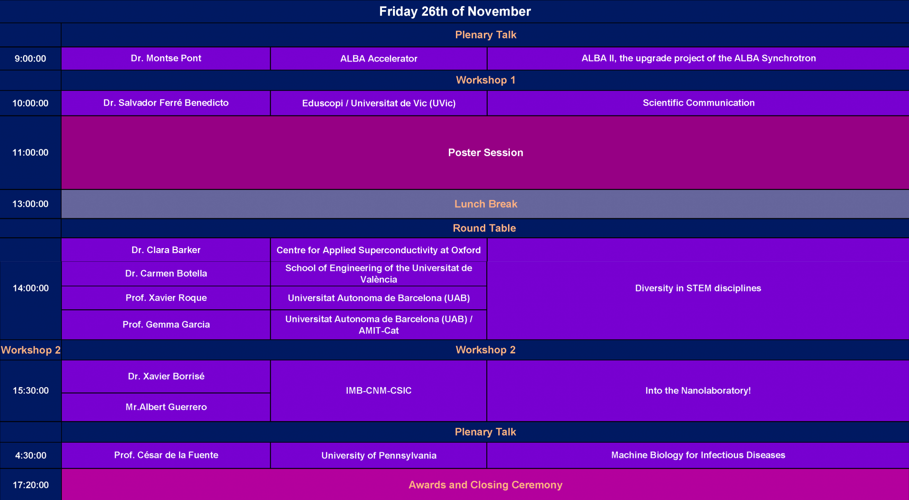

2021
6th Scientific Meeting of PhD Students at UAB campus
Bellaterra, November 25-26, 2021
Welcome
Starting from a small gathering of the PhD students of ICMAB in 2011, JPhD scientific meeting of Barcelona Nanocluster-Bellaterra (BNC-b) that incorporates ICMAB, ICN2, IMB-CNM and UAB has emerged as an outstanding platform for networking and scientific communication over the last 10 years.
Following this 10-years journey, it is a great pleasure to announce the upcoming edition of this conference, the 6th scientific meeting of PhD students of BNC-b, JPhD 2021. JPhD2021 is aimed to exchange knowledge about scientific research from different fields, share research works and communicate among the PhD students of the BNC-b in an academic and scientific environment. The meeting will integrate the entire UAB research framework and open to other institutes and universities as well. The conference will be a 2-day long hybrid event framed with oral presentations, poster session (hopefully presential), workshops and interesting scientific plenary talks regarding current scientific issues given by established researchers in their own fields. We invite all the PhD researchers to the JPhD2021 to use this opportunity for fostering collaboration.


Programme


Workshops
1.- Scientific Communication
"So, what exactly is your research about?..." More than just an uncomfortable question you might get from a relative, explaining your science to a non-expert audience is an increasingly important skill for our impact as researchers, and can even be key for getting and implementing funded projects. The goal of this talk is to share with you tools and concepts to adapt the messages to reach different and broader audiences.
2.- Into the Nanolaboratory!
I need to measure the layer structure of my sample, but how? Which materials are there before and after this experiment? I would like to prepare this device, how can I do it? These, and other questions are usual among the students and scientists while they develop their ideas. In this workshop, it will be explained which techniques can be used to prepare and to characterize different samples using several systems. So come with me to the nanolaboratory!
Organizers
- Sofia Aslanidou, CNM
- Teresa Cardona, ICMAB
- Aida Carreño, ICMAB
- José Catalán, ICMAB
- Marc Domingo, ICMAB
- Aiswarya Kethamkuzhi, ICMAB
- Naureen Khanam, ICMAB
- Nanthilde Malandain, ICMAB
- Jose María Castillo, ICN2
Venue
Sala d'Actes ICMAB for all sessions except Oral Session B, which will take place in ICN2, and the poster session, which will take place in the Clock Square UAB.
Contact
JPhD Coordinator
Institut de Ciència de Materials de Barcelona (ICMAB-CSIC)
Campus de la UAB
E-08193 Bellaterra, Spain
Tel: +34 935 801 853 · Fax: +34 935 805 729
E-mail: jphd2021@icmab.es